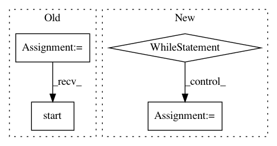

b596fa33d6b03bb858cf6599c1d37cb4a182af33,homeassistant/__main__.py,,main,#,207
Before Change
else:
config_file = ensure_config_file(config_dir)
print("Config directory:", config_dir)
hass = bootstrap.from_config_file(
config_file, daemon=args.daemon, verbose=args.verbose,
skip_pip=args.skip_pip, log_rotate_days=args.log_rotate_days)
if args.open_ui:
def open_browser(event):
Open the webinterface in a browser.
if hass.config.api is not None:
import webbrowser
webbrowser.open(hass.config.api.base_url)
hass.bus.listen_once(EVENT_HOMEASSISTANT_START, open_browser)
hass.start()
hass.block_till_stopped()
if __name__ == "__main__":
main()
After Change
// Run hass is child process. Restart if necessary.
keep_running = True
while keep_running:
hass_proc = Process(target=setup_and_run_hass, args=(config_dir, args))
keep_running = run_hass_process(hass_proc)
if __name__ == "__main__":
main()
In pattern: SUPERPATTERN
Frequency: 3
Non-data size: 4
Instances
Project Name: home-assistant/home-assistant
Commit Name: b596fa33d6b03bb858cf6599c1d37cb4a182af33
Time: 2016-01-26
Author: rmkraus@gmail.com
File Name: homeassistant/__main__.py
Class Name:
Method Name: main
Project Name: pantsbuild/pants
Commit Name: 7c355f4ee18b25fcab7c501ba0b531ac1b564350
Time: 2018-01-25
Author: kwlzn@users.noreply.github.com
File Name: src/python/pants/pantsd/service/store_gc_service.py
Class Name: StoreGCService
Method Name: run
Project Name: hyperdashio/hyperdash-sdk-py
Commit Name: f11bb1ef1321e9525fd92de72b2e8a78af24cf17
Time: 2017-07-16
Author: richardartoul@gmail.com
File Name: hyperdash/hyper_dash.py
Class Name: HyperDash
Method Name: run_http